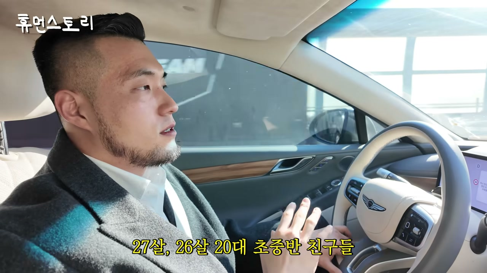
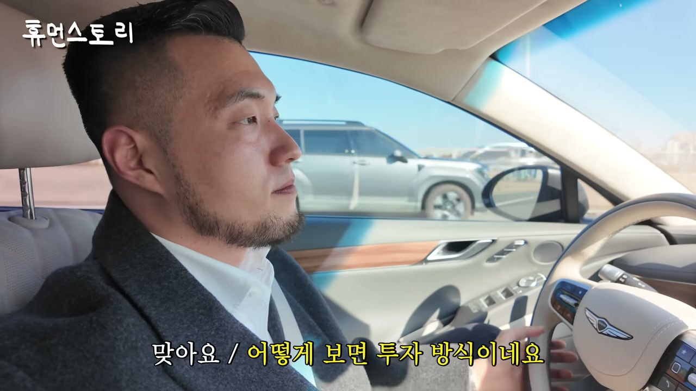
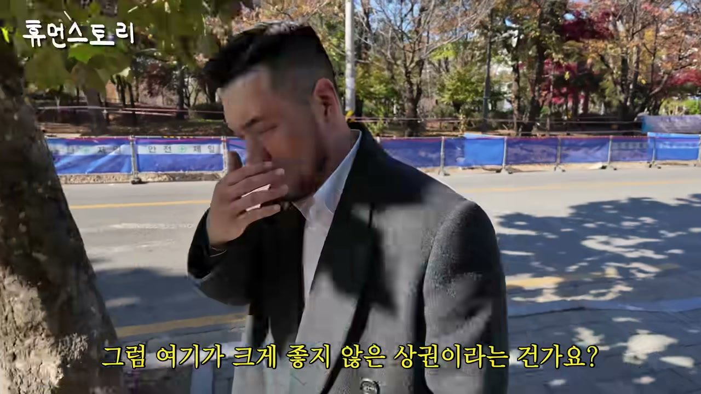
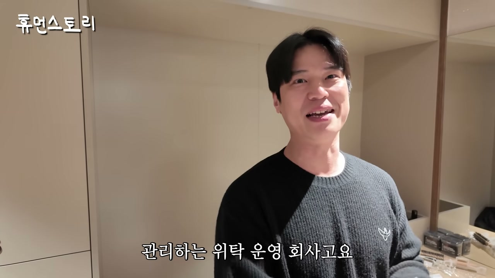
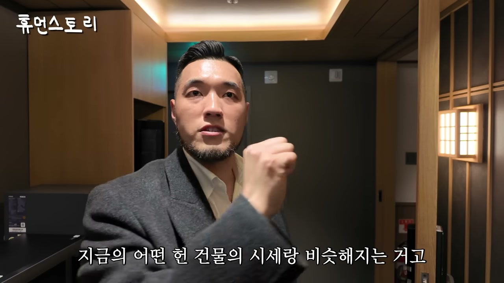
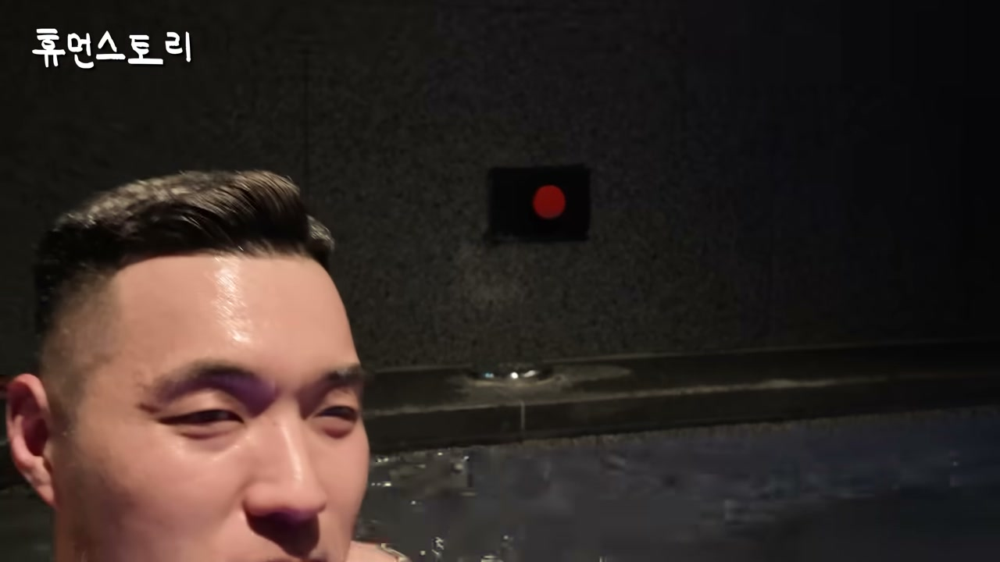
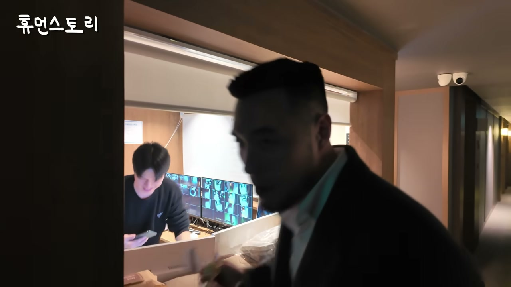
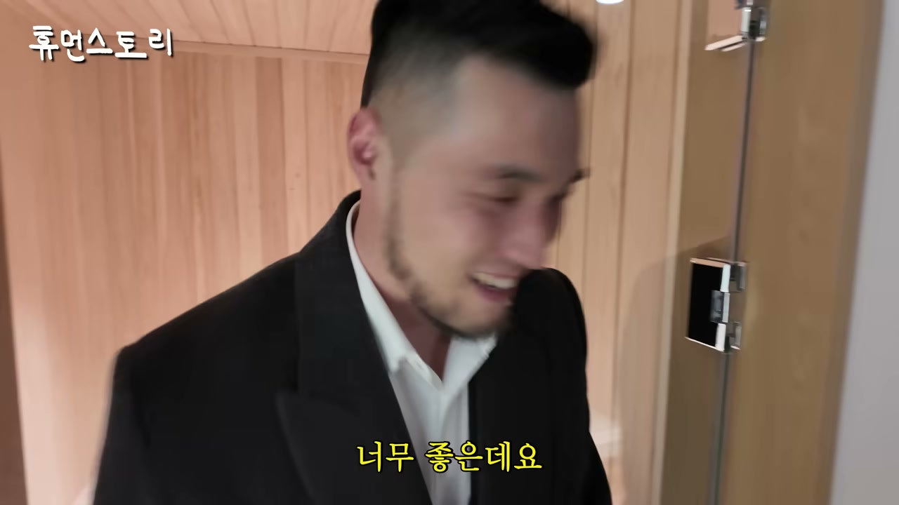
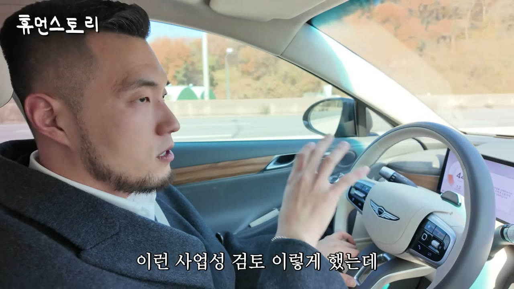
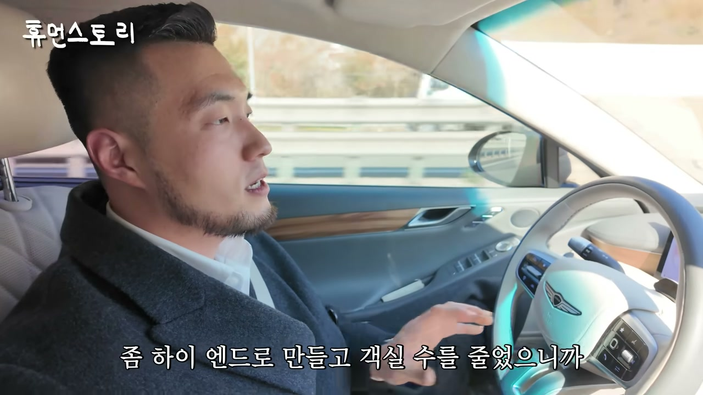

이 글은 전체 3편 중 2편입니다. 긴 영상을 주제 흐름에 맞춰 나누어 정리했습니다.
채널: 휴먼스토리 | 길이: 1:01:14 | 날짜: 20251125
이 글은 전체 3편 중 2편입니다. 본 파트에서는 2편에 해당하는 세그먼트(11~20)만 상세히 다루며, 1편과 3편의 내용은 흐름 이해를 위한 최소한의 연결 맥락으로만 언급합니다.
대표는 현재 월에 3~4개 정도씩 프로젝트가 진행된다고 밝힌다. 인터뷰어가 "바쁘네요, 엄청 열심히 하고 있다"고 하자 그도 인정한다. 이어 "돈도 많이 버셨겠다"는 질문에 대표는 "제가 버는 게 아니라 스페이스플래닝 법인이 버는 것"이라고 답한다. 이 답변은 개인 수익이 아닌 법인 중심의 사업 구조를 만들고 있다는 점, 즉 조직화·규모화를 지향하는 태도를 보여준다. 인터뷰어는 "회사가요"라고 되받아 이 구분을 짚는다.

작년 6월 종합건설면허가 나와 이제 신축도 하고 건축도 할 수 있게 되었고, 실제로 신축 호텔도 만들고 있다고 설명한다. 나아가 "궁극적으로 우리 회사가 더 커서 상장하는 게 목표"라고 명확히 말한다. 인터뷰어가 이유를 묻자 그는 개인적 소망과 회사의 목표를 구분한다. 개인적으로는 국내에서 "유일무이한 숙박 전문 시공사"가 제대로 되고 싶고, 한국에서 자기가 만드는 호텔들이 "K-숙박업의 표준"이 되게 하는 것이 꿈이라고 밝힌다. 이는 단순 시공업을 넘어 표준과 브랜드를 만드는 산업 재편자의 야심으로 읽힌다.
그는 이 표준화가 이루어지면 외국에도 진출할 수 있고, 외국에 이런 브랜드가 나갔을 때 사람들이 한번 찾아가게끔 만들고 싶다고 말한다. 인터뷰어가 "그런 거네요"라고 맞장구치자 "맞아요"라고 확인한다. 이 비전은 그가 한국에서 검증한 숙박 모델을 국제 시장으로 확장하려는 의도를 담고 있다. 결국 한국 숙박업의 정체성을 새로 정의해 수출하겠다는 포부다.
모텔이 너무너무 낙후된 산업인 이유에 대해, 그는 야놀자 근무 때 가장 많이 느낀 점이라며 "모텔을 주로 찾는 고객은 저보다 10살 어린 친구들"이라고 말한다. 26~27세, 20대 초중반이 메인 고객인데, 리모델링과 운영을 하는 사람은 자신의 아버지·어머니 세대라는 것이다. "왜 그럴까요?"라고 스스로 묻고 답하는 구조로, 이 세대 갭이 산업을 뒤처지게 한 핵심 원인이라고 진단한다. 수요자와 공급자 간의 갭이 가장 큰 시장이라는 표현으로 정리된다.
그는 카페는 소액으로 창업할 수 있다고 설명한다. 임차인이 들어가 리모델링하면 되기 때문에 오히려 젊은 사람들이 크리에이티브하게 만든다는 것이다. 반면 모텔은 일반 상업지의 100평 정도를 보유하는 것 자체가 상당한 자본이 드는 투자이고, 여기에 건물 리모델링까지 하려면 10억 대 이상이 더 든다. 그런 큰 사업이기 때문에 보유·리모델링 결정 권한을 가진 사람은 나이 많은 자본가일 수밖에 없다는 논리다. 그래서 수요자와 공급자 갭에 맞춰주지 못하는 것이 많았다는 결론으로 이어진다.
그는 우리나라 모텔의 역사를 거슬러 올라가면 사실 일본의 러브호텔에서 모티브를 따왔다고 말한다. 인터뷰어가 "아 그래요? 정확한 정보인가요?"라고 놀라 묻자 "정확한 정보예요"라고 강조한다. 웃음이 오가는 가운데, 이 기원 설명은 이후 모텔 산업의 퇴폐적 이미지와 선입견 논의로 자연스럽게 연결된다. 즉 한국 모텔의 정체성과 이미지 형성에 일본 러브호텔이라는 원형이 결정적이었다는 분석이다.
그는 러브호텔의 사전적 정의가 "성교를 하기 위해서 만들어진 호텔"이라고 소개하며, 그만큼 퇴폐적이라는 점을 인정한다. 이 때문에 모텔에 대한 선입견이 굉장히 심한 사업이고, 다른 산업에 있던 사람들이 이 산업으로 잘 들어오지 않았다고 설명한다. 그런데도 시장 자체는 엄청 크다는 것이 그의 지적이다. 그래서 사업 입장에서 보면 이 안에서 할 게 되게 많다는 결론에 도달한다. 선입견이 진입을 막아 공백이 크고, 그 공백이 곧 기회라는 구조적 통찰이다.
요즘 젊은 창업자가 많아졌다는 질문에 그는 "엄청 많아졌다"고 답한다. 유튜브에도 모텔·호텔 창업 콘텐츠가 많아졌고, 에어비앤비를 하던 사람들이 모텔 창업으로 넘어오고 있다고 한다. 소액 창업의 논리는 "저렴한 건물에 대출을 다 받아 사고, 자기자본금으로 시공해 이익을 만들어 현금흐름을 만들고, 그 흐름을 유지하면서 추후 더 높은 금액에 매각한다"는 구조다. 스케일이 작아지고 요구 수익률이 낮아질 뿐 논리는 동일하다고 정리한다. 인터뷰어가 "어떻게 보면 투자 방식이네요"라고 하자 "투자 방식이죠"라고 확인한다.

이동 중 수서역 방향으로 길을 잘못 들어 시간이 늘어나는 해프닝 끝에 안산에 도착한다. 대표는 안산 원곡동 상권이 중국인이 많이 살고 유동인구가 많지 않아 상권이 열악하다고 설명한다. 이런 곳에서 젊은 친구들이 오고 싶게 만드는 호텔을 어떻게 만들지, 적은 예산을 어떤 우선순위로 투자할지 고민한 현장이라고 밝힌다. 앞서 본 호텔이 스파·힐링·웰니스 컨셉이었다면, 여기는 "료칸 컨셉", 좀 더 정확히는 "가성비 료칸" 컨셉이라고 소개한다.
방마다 욕탕이 있지만, 여기서는 지하를 목욕탕으로 만들어버렸다고 말한다. 이유는 그 정도 부대 공간이 없으면 어차피 고만고만한 호텔밖에 안 된다는 판단에서다. 목욕탕 자체의 매출도 의미가 있을 것 같았고, 자신이 고객이라면 객실은 심플하게 료칸 느낌만 나도 제대로 된 목욕탕이 있으면 훨씬 더 이용할 것 같았다고 한다. 목욕탕 이용하는 김에 숙박도 할 수 있다는 연결성도 강조한다. 또한 코로나 이후 목욕탕 사업이 완전히 죽어 좋은 목욕탕이 다 없어졌기 때문에 지금이 목욕탕으로 하면 되겠다는 판단을 했다고 밝힌다.
앞서 본 곳은 "아늑 호텔 앤 스파"였고, 여기는 "아늑 료칸"으로, 하나의 브랜드지만 디자인 언어에 따라 브랜드를 나눈 것이라고 설명한다. 이 현장은 아직 오픈 전이며 다음 주에 오픈한다고 한다. 올 리모델링한 건물과 기존에 어느 정도 리모델링이 되어 있던 건물을 그대로 활용해 예산을 아주 조금만 투자해 두 건물을 한 번에 운영한다고 밝힌다. 일본 료칸 느낌의 객실 구성, 오픈 전이라 잠긴 상태 등 현장 상황도 설명된다. 두 건물을 동시에 운영한다는 점이 이 현장의 운영 핵심이다.

이곳은 야간에 무인이 되고, 주간에는 사람이 통합 프론트에서 운영한다고 한다. 위탁 운영을 맡아 운영하는 본부장이 소개되는데, 그는 직접 운영이 아니라 운영하는 지점과 지사들을 관리하는 위탁 운영 회사 소속이다. 사장님들이 투자하고, 운영을 잘할지 모르거나 귀찮으니 운영사에 맡긴다는 구조다. 위탁을 주면 청소, 프런트, 마케팅 등 운영에 대한 모든 것을 대행해 주고, 건물주가 관여할 것이 전혀 없다고 강조한다. 사장이 직접 운영하는 것보다 운영 경험이 많아 가성비가 훨씬 좋고, 자체 인건비를 생각할 필요가 없다는 점이 위탁의 장점으로 제시된다.

원래 창고였던 공간을 목욕탕으로 바꿨고, 남탕과 여탕이 다 있으며 사우나도 있다고 설명한다. 목욕 후 아이스크림을 하나씩 먹으라고 주는 서비스도 있다. 인터뷰어는 "이게 모텔이에요?"라며 놀라고, 오픈 전이라 처음 보는 것이라고 안내한다. 또한 야간 무인, 주간 통합 프론트, 지하 목욕탕, 사우나 등 시설 구성이 하나의 운영 모델로 정리된다. 이 장면은 모텔이 단순 숙박을 넘어 지역 주민도 이용할 수 있는 목욕·사우나 부대시설을 갖춘 복합 공간으로 진화한다는 점을 보여준다.
총 객실은 58개이며, 예상 매출은 2억 원 이상까지는 아니고 1억 원대 중반만 나와도 된다고 한다. 이는 목표이자 보수적으로 잡은 예상 매출로, 상권분석을 첨예하게 하고 안산에 기존에 운영하던 곳의 매출 데이터까지 가져와 검토한 결과 거의 무조건 달성 가능하다고 본다. 투자 비용은 두 건물 합쳐 19억 6천만원, 약 20억이다. 이 사업은 공사비가 20억 가까이 들어도 자기자본금 17억이면 가능하고, 연간 비용을 다 치고 이익만 따져도 자기자본 17억 대비 16.1%를 운영 이익으로 벌 수 있는 건물이라고 설명한다. 돈으로 치면 연간 2억 7천만원 정도 버는 구조다.
이 건물은 감정가 대비 65% 수준으로 샀다. 감정가 10억이면 6억 5천만원에 산 셈으로, 싸게 사고 시설비를 투자해도 현재 헌 건물 시세와 비슷해지고 연 2억 원씩 수익이 계속 나온다는 설명이다. 운영까지 대행하니 "오토 자산"이 되고, 매각 시점에는 지가도 올라 있을 것이라고 본다. 두 건물을 한 번에 사서 땅 크기가 큰 것도 장점이다. 상가라면 임대차보호법으로 임차인 명도가 가장 힘들고 한 건물에 수십 명의 명도 대상이 있을 수 있지만, 호텔은 주인이 한 분이라 오케이만 하면 매각되고 시행사는 바로 철거할 수 있다. 그래서 사업이 안전하고, 모텔이 상업지에 있어 용적률·건폐율이 좋고, 근린생활시설이 아닌 호텔이면 명도 이슈도 적어 부동산 개발 관점에서 좋은 땅이 된다는 결론이다. 실제로 지금 핫하다는 평가가 나온다.

대표는 목욕을 좋아한다며 실제로 탕에 들어가고, 본부장은 일정이 있다며 사양한다. 운영 방식은 대중 목욕탕처럼 운영해 모텔을 이용하지 않는 사람도 쓸 수 있게 만들었고, 동네에 좋은 목욕탕이 없어 목욕탕 수요는 항상 있으므로 그런 사람들이 오면 된다고 한다. 호텔 투숙객은 무료로 이용할 수 있다. 객실 이용료는 10만원 정도 받는 게 목표이며, 이 현장도 연 2억 원 중반이 넘는 수익(한 달 2,000만원 가까운 순수익)이 나온다고 한다. 인터뷰어가 "객실 4개 정도로 예쁘게 꾸며 단가를 높게 받는 모텔도 가능한가"라고 묻자, 객실 4~5개인 모텔은 별로 없고 "전체 모텔에서 내 객실만 시공하겠다"는 케이스도 흔치 않다고 답한다. 최소 객실 수는 옛날 여관 같은 열몇 객실짜리 모텔이 있으며, 요즘은 이런 것들이 많이 거래돼 소액 투자로 도전하는 사람이 많다고 설명한다.

여인숙 같았던 곳을 어떻게 바꿨는지 보여주겠다며, 19객실짜리를 12객실로 통합해 완전히 료칸으로 만들고 직원을 한 명도 두지 않는 무인 호텔이라고 소개한다. 위탁을 하더라도 사람이 지키고 있지 않으니 인건비가 절감되고, 아침 시간에만 대실을 안 받기 때문에 청소팀이 청소하면 되는 호텔이라고 설명한다. 모텔을 호텔처럼 바꿔 매출이 약 700억 가까이 나온다는 점도 다시 확인된다. 객실은 다다미를 밟을 수 있게 하고, 가운이 아닌 상하의를 제공해 입고 대욕탕에 갈 수 있게 했다. 작은 방은 화장실이 작아도 목욕탕이 따로 있어 욕조를 넣을 필요가 없다는 판단이 담겨 있다.
스위트룸은 스탠다드 방에서 아끼고 이 방에 투자한 구조로, 20만원대 중반에서 30만원을 받고 주말엔 더 받는다. 방 안에 탕이 있고 사우나도 있으며, 평일 25만~30만원 수준이다. 이 방은 3개의 방을 통합한 것으로, 각 객실당 7만원씩이면 21만원인데 통합해 25만원에 팔아도 고객은 가성비 있다고 느낀다. 상권이 열악할 때는 확실한 컨텐츠가 있는 다인실 방을 만들어 회전율을 높이고 공실 부담을 줄이는 것이 머리를 쓴 전략이라고 강조한다. 작은 방은 "방이 작네"라는 느낌이지만 이 방은 "너무 좋다"는 반응이 나온다. 가족이 오면 좋고, 혼자 와도 프라이빗하게 목욕을 즐길 수 있는 공간이라는 설명이다.

대표가 만든 브랜드는 20개 정도이며, 아늑 브랜드는 료칸 형식, 처음 본 것은 스파 형식이라고 정리한다. 안양에 새로 만든 호텔은 좀 더 하이엔드 료칸 컨셉으로, 브랜드는 '패스포트'다. 실제 일본에서 료칸을 즐기는 경험을 하는 것과 같은 공간을 목표로 하며, 일본 나고야에 있는 느낌을 살려봤다고 설명한다. 인터뷰어는 "5년 동안 일 많이 하셨네요"라고 감탄하고, 본부장에게 감사 인사를 전한다. 목욕탕을 갔다 나오는 기분이라는 표현과 함께, 앞에 나가면 개울이 펼쳐질 것 같은 료칸 분위기가 강조된다.
다음 스케줄은 수강생들이 있는 곳으로, 대표가 만든 호텔들을 보여주며 현장 견학을 진행한다고 밝힌다. 견학하며 방을 돌아다니면서 수익, 투자비 등을 설명한다. 수강은 홈페이지에서 신청하며, 댓글로 링크를 남겨둘 테니 숙박업 창업 희망자는 들어와 보라고 안내한다. 8주 동안 좋은 모텔 부동산 매수(부동산개발), 기획, 리모델링, 시공, 운영, 마케팅까지 한 사이클을 다룬다. 한 사이클을 다 돈 사람들은 본인이 물건을 골랐을 때 사업성 검토 보고서를 작성할 역량이 되고, 실제로 카톡으로 PPT를 보내 "사업성 검토 이렇게 했는데 생각이 다른 게 있냐"고 물어본다고 한다. 숙박업 창업자는 다른 사업에서 이미 의미 있는 성과를 거둔 분들이 많고, 숙박업을 안 해봤을 뿐 부동산 투자 경험은 많다는 점도 언급된다.

돈이 없으면 모텔을 아예 없이 하기는 힘들고, 리모델링 비용 때문이라는 점이 명확히 설명된다. 낡은 모텔을 그대로 운영하는 경우는 거의 없으며, 그대로 운영하면서 운영만 잘하는 방법을 배울 수 있냐는 질문에는 "그래도 되는 상권이 간혹 있을 수 있다"고 답한다. 다만 수요는 많은데 숙박업이 아예 없는 상권은 높은 확률로 이미 비싸다고 한다. 돈이 없으면 더 작은 숙박업이 맞고, 예산이 부족할 때는 우선순위를 알고 투자하는 게 정말 중요하다고 강조한다. 사업이 순리대로 가는 로직을 알아야 하며, 안 해본 사람은 여기를 리모델링하면 매출이 얼마 나오는지 알 수 없다고 지적한다. 최소 2억 정도 있으면 대출을 받아, 실당 표준 3,500만원 시공비 기준으로 실당 2천만원의 우선순위 집중 투자로 10객실이면 해볼 만하다고 제시한다. 객실당 요금은 상권과 하드웨어에 따라 다르고 항상 변수가 있으며 컨설팅하기 나름이라고 덧붙인다. 좋은 자리에 10객실만 해도 높은 객실비와 좋은 매출이 가능하다고 본다. 12객실 통합 하이엔드 무인 호텔은 객단가 20만원 중반~30만원으로 세팅되었고, 운영수익과 함께 부동산 투자(매출 상승 → 건물값 상승 → 감정가 상승)가 결합된 모델이라고 정리한다. 리모델링 즉시 감정가가 오르고 꾸준한 월 현금흐름이 있으며 투자 건물의 가치가 계속 오르는 안정적 수익 구조라는 점이 최종 결론으로 제시된다. 마지막에는 옆 건물과 똑같이 생겼던 낡은 여관이 어떻게 바뀌었는지 보여주는 장면으로 이어진다.


"제가 버나요, 우리 스페이스플래닝 법인이 버는 거죠."
"궁극적으로는 우리 회사가 더 커서 상장하는 게 목표예요."
"국내에서는 유일무이한 숙박 전문 시공사가 제대로 되고 싶은 거고요, 그러면 제가 한국에서 저희가 만드는 호텔들이 K-숙박업의 표준이 되게 하는 게 저의 꿈이에요."
"모텔을 주로 찾는 고객은요 저보다도 10살 어린 친구들이 메인 고객이에요. 27살, 26살 20대 초중반 친구들이요. 근데 모텔을 리모델링하고 그다음에 그거를 운영하시는 분들은 저희 아버지, 어머니 세대예요."
"카페는 소액으로도 창업할 수 있어요. (…) 근데 모텔은 일반 상업지의 100평 정도를 보유한다는 거는 상당히 많은 이미 자본이 들어가야 되는 투자고, 거기다 건물까지 리모델링 하려면 정말 10억 대 이상이 더 들어가잖아요."
"우리나라 모텔은 사실 일본의 러브호텔에서 모티브를 따왔거든요. (…) 러브호텔의 사전적 정의가 성교를 하기 위해서 만들어진 호텔이에요."
"모텔의 선입견이 굉장히 심한 사업이라서 다른 산업에서 계셨던 분들이 이 산업으로 잘 들어오지도 않던 시장인 거예요. 근데 시장은 엄청 크죠."
"저렴한 건물에 대출을 다 받아서 사고, 그다음에 자기자본금으로 시공을 해가지고 이익을 만들어서 현금 흐름을 만들고, 현금 흐름을 쭉 유지하면서 추후에 매각하겠다. 이 논리는 똑같은 거예요."
"그 정도 부대 공간이 없으면 어차피 고만고만한 호텔밖에 안 된다."
"목욕탕 사업이 코로나 이후로 완전히 죽어가지고 좋은 목욕탕이 다 없어졌어요. 그래서 여긴 목욕탕으로 하면 되겠다."
"위탁 맡기시면은 사장님들이 관여하실 게 전혀 없는 거예요."
"자기자본금은 17억원이면 할 수 있는 사업이에요. (…) 연간 17억원 투자한 거 대비 16.1%는 운영 이익으로 벌 수가 있는 건물이에요."
"감정가 대비해서 65% 수준으로 산 거예요. (…) 싸게 사고 시설비를 투자해도 지금의 어떤 헌 건물의 시세랑 비슷해지는 거고, 우리는 근데 2억원 정도씩 연에 계속 나오는 거고요."
"호텔은 주인이 한 분이잖아요. 주인이 '오케이'하면 매각이 되는 거고, 매각이 되면 시행사 입장에서는 바로 철거를 할 수 있는 거죠. 그러니까 사업이 안전하잖아요."
"19객실 짜리인데 12객실로 통합했어요. 완전히 거기는 료칸으로 만들어버리고 직원을 한 명도 안 두는 호텔이에요."
"각 객실당 7만원씩 판다고 그랬을 때 21만원이잖아요. 근데 통합해서 팔면 25만원 줘도 지금 '가성비 있네' 이렇게 느끼시잖아요. (…) 상권이 이렇게 열악할 때는 오히려 이렇게 다인실인데 확실한 컨텐츠가 있는 방을 만들어주는 게 회전율을 더 빨리 올릴 수 있으면서도 공실부담이 없어지는 거예요."
"예산이 부족할 때는 우선순위가 뭔지 알고 투자하는 게 진짜 중요하고요. 우선은 이 사업이 어떤 순리대로 가는지를 로직을 아셔야 돼요."
"실당 표준은 3,500만원이니까요. 그러면 내가 한 실당 2천만원 정도의 우선순위에 집중한 투자로 10객실이요? 10객실 정도 하겠다고 하면 해볼 만하죠."
"모텔 운영을 잘해서 매출이 많이 나오면 건물값이 올라간다는 거네요? — 그렇죠. 건물값이 올라가고 그다음에 지가가 상승할 거니까 몇 년을 갖고 있으면요. 감정가는 리모델링을 한 즉시 올라가죠."
1. 숙박업의 본질은 '부동산 투자 + 운영'의 결합이다. 이 파트의 핵심 메시지는 모텔 사업이 단순 숙박업이 아니라, 저평가된 부동산(감정가 대비 65% 매입)을 사서 리모델링으로 감정가를 즉시 올리고, 위탁 운영으로 안정적 현금흐름을 확보한 뒤, 매각 시점의 지가 상승까지 취하는 복합 투자라는 점이다. 연 2억 7천만원, 자기자본 대비 16.1% 수익률은 이 구조의 구체적 실증이다.
2. 산업의 낙후는 곧 기회다. 모텔 산업은 20대 초중반 고객과 부모 세대 운영자 사이의 세대 갭, 일본 러브호텔 기원에서 비롯된 퇴폐적 선입견, 100평 상업지·10억대 리모델링이라는 높은 진입장벽으로 인해 다른 산업의 유능한 인력이 들어오지 않았다. 그러나 시장 자체는 크기 때문에, 이 공백을 정확히 겨냥하는 것이 곧 차별화 전략이 된다.
3. 위탁 운영과 무인화가 수익성을 만든다. 청소·프론트·마케팅을 위탁 운영사가 전담하고, 야간 무인화, 아침 대실 미운영, 19객실→12객실 통합으로 인건비를 절감하면서 객단가를 20만원 중반~30만원까지 끌어올린다. 건물주가 관여할 것이 전혀 없는 "오토 자산" 구조가 만들어진다.
4. 저예산 창업자에게는 우선순위 투자가 답이다. 2억 원으로 10객실, 실당 표준 3,500만원 대신 실당 2천만원의 우선순위 집중 투자라는 현실적 대안이 제시된다. 다만 사업의 로직을 모르면 리모델링 후 매출을 예측할 수 없으므로, 8주 강의를 통해 부동산개발~운영·마케팅의 한 사이클을 익히고 사업성 검토 보고서를 스스로 작성할 수 있는 역량을 갖추는 것이 창업 성패를 가른다.
5. K-숙박업 표준화와 해외 진출, 상장이라는 확장 비전. 종합건설면허 취득으로 신축까지 가능해진 스페이스플래닝은 20개의 브랜드를 통해 스파·가성비 료칸·하이엔드 료칸(패스포트) 등 다양한 컨셉을 실험하고 있다. 궁극적으로는 숙박 전문 시공사로서 K-숙박업의 표준을 만들고 해외에 브랜드를 수출하며 상장하는 것이 목표다. 2편 말미에서는 옆 건물과 똑같이 생겼던 낡은 여관이 완전히 다른 공간으로 변신한 현장이 예고되며, 이어지는 3편에서 그 완성형과 추가 사업 확장이 다뤄질 것으로 보인다.
댓글
GitHub 이슈 기반 댓글 시스템입니다.